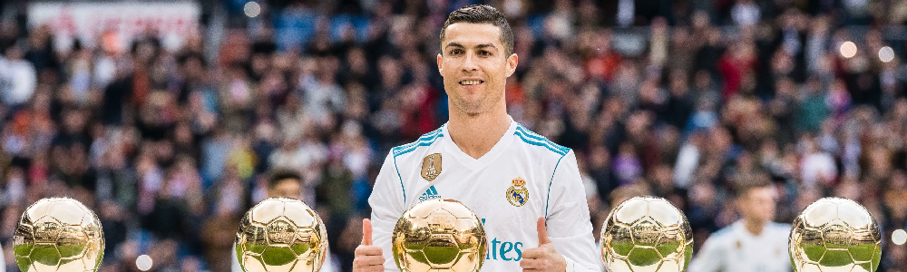

Uno de los mejores jugadores de mundo.
Debut deportivo: 14 de agosto de 2002 (Sporting C. P.)
Posición: Delantero
Dorsal: 7
Padres: María Dolores dos Santos y José Dinis Aveiro
Parejas: Irina Shayk (2010-2015), Georgina Rodríguez (2016)(actualidad)
Hijos: Alana Martina dos Santos Aveiro, Eva Maria Dos Santos, Cristiano Ronaldo Jr., Mateo Ronaldo
Nombre: Cristiano Ronaldo dos Santos Aveiro
Estatura: 1,85 m
Cristiano Ronaldo nació el 5 de febrero de 1985 en Santo António, un barrio de Funchal, Isla de Madeira, Portugal.
Familia
Hijo menor de María Dolores dos Santos y del jardinero municipal José Dinis Aveiro, que lo bautizó con el nombre de Ronaldo en homenaje al político y actor estadounidense Ronald Reagan. Tuvo un hermano mayor, Hugo, y dos hermanas también mayores, Elma y Liliana Cátia. Su bisabuela Isabel da Piedade era de Cabo Verde. Su familia tiene raíces firmemente católicas y Ronaldo declaró que vivían en la pobreza teniendo que compartir habitación con su hermano y hermanas. «Aún recuerdo cuando mi maestra me decía que el fútbol no daba de comer». Cristiano Ronaldo Muy popular entre sus compañeros de escuela, pero fue expulsado del colegio tras lanzar una silla a un profesor por faltarle al respeto.
Familia
Hijo menor de María Dolores dos Santos y del jardinero municipal José Dinis Aveiro, que lo bautizó con el nombre de Ronaldo en homenaje al político y actor estadounidense Ronald Reagan. Tuvo un hermano mayor, Hugo, y dos hermanas también mayores, Elma y Liliana Cátia. Su bisabuela Isabel da Piedade era de Cabo Verde. Su familia tiene raíces firmemente católicas y Ronaldo declaró que vivían en la pobreza teniendo que compartir habitación con su hermano y hermanas. «Aún recuerdo cuando mi maestra me decía que el fútbol no daba de comer». Cristiano Ronaldo Muy popular entre sus compañeros de escuela, pero fue expulsado del colegio tras lanzar una silla a un profesor por faltarle al respeto.
Futbolista Se crio en un barrio obrero y a los diez años lo descubrió el Sporting de Lisboa, Cristiano Ronaldo jugaba por entonces en el modesto Andorinha, club de su Funchal natal y en el que su padre trabajaba como utillero. Cuatro años después, acordó con su madre dedicarse exclusivamente al fútbol. Después Ronaldo pasó al Nacional y seis meses después este realiza la cesión de los derechos de Cristiano. En 2001, el técnico del primer equipo, el rumano Laszlo Boloni, quiso que debutara ese mismo año, pero un test lo desaconsejó por no estar lo suficientemente trabajado. Un año después lo hacía debutar en la previa de la Champions ante el Inter.
Selección portuguesa Con la selección de Portugal Cristiano Ronaldo formó parte del ataque junto a Quaresma, Helder Postiga y Hugo Viana en la selección sub-21 y derrotaron a Inglaterra. En junio fue la estrella del combinado sub-20 que conquistó el prestigioso torneo de Touloun batiendo en la final a Italia por 3-1. Felipe Scolari lo hizo debutar con la selección absoluta el 20 de agosto de 2003 ante Kazakhstan, con dieciocho años sustituyó a Luis Figo, uno de sus ídolos. El 8 de Septiembre de 2020, se convirtió en el Primer jugador Europeo en la Historia del Fútbol de Selecciones en marcar 100 goles.
Manchester United F.C. El Barça y la Juve lo pretendían, aunque finalmente fue el Machester quien lo fichó en el verano de 2003 tras pagar 17,5 millones de euros de traspaso. Cristiano permaneció en el club durante 6 temporadas donde obtuvo 3 Premier Leagues, 1 Copa de Europa y 1 Mundial de Clubes.
Reconocimientos Considerado uno de los mejores futbolistas del mundo y uno de los deportistas más mediáticos. Ronaldo fue distinguido con el premio al Mejor jugador de la Premier League en 2007 y 2008, así como Deportista portugués del Año. En la temporada 2007-08 se hizo acreedor de la Bota de Oro, el Balón de Oro, y el FIFA World Player en 2008.
Real Madrid F.C El 11 de junio de 2009 el Manchester United aceptó la oferta de 93,9 millones de euros del Real Madrid C.F. El traspaso de Cristiano Ronaldo se confirma el 26 de junio y se convirtió en el traspaso más caro de la historia del fútbol. El 6 de julio fue presentado en el Estadio Santiago Bernabéu ante 80.000 personas. Debutó en el campo el 21 de julio con una victoria por 1-0 sobre el Shamrock Rovers. Su primer gol llegó una semana después de penalti en la victoria del Madrid por 4-2 sobre el LDU Quito. El 29 de agosto, se estrenó en la Liga con un gol contra el Deportivo La Coruña al que ganaron 3-2; el 15 de septiembre, anotó dos tiros libres en la victoria por 5-2 frente al Zürich, sus primeros goles en la Champions League para el Real. Tras anotar otro gol en un partido de Liga ante el Villarreal, se convirtió en el primer jugador del club en anotar en sus primeras cuatro apariciones. Con el Real Madrid consiguió una Copa del Rey en 2011, la Liga 2011-12 y la Supercopa de España 2012. Con la Selección de fútbol de Portugal logró el subcampeonato en la Eurocopa 2004 de Portugal, y un cuarto lugar en la Copa Mundial de 2006 en Alemania. En su cuarta temporada consecutiva con el Real Madrid logró la Copa de Su Majestad el Rey; la Champions League; una Super Cup y la FIFA Club World Cup. En la final de la Champions League ante el Atlético de Madrid, se convirtió en el primer jugador en la historia en anotar en dos finales de la Copa de Europa para dos equipos ganadores diferentes. El Real ganó su décima Copa de Europa.
Distinciones Cristiano ganó su segundo Balón de Oro el 13 de enero de 2014, por delante de Messi y Ribéry tras un 2013 espectacular con 69 goles y una gran repesca para el Mundial con Portugal. El 12 de enero de 2015 logró su tercer Balón de Oro alcanzando el 37,66% de los votos, más del doble de apoyos que recibió Messi (15,76%). El 13 de octubre, recibió su cuarta Bota de Oro convirtiéndose en el jugador que más veces la recibió, las tres últimas con el Real Madrid. Consiguió la undécima Copa de Europa del Real Madrid, tras derrotar en los lanzamientos de penalti al Atlético de Madrid en la final de la Liga de Campeones 2015-16, anotando el gol definitivo de la tanda. Con la selección portuguesa conquistó la Eurocopa de 2016 tras vencer a Francia en la final de París. Tuvo que retirarse en la primera parte del partido lesionado, pero acabó alzando el trofeo como capitán del equipo, además de proclamarse Bota de Plata del torneo tras anotar tres goles y dar tres asistencias. El 12 de diciembre de 2016, ganó su cuarto Balón de Oro. El portugués, con 31 años, se impuso entre otros, a Leo Messi y Antoine Griezmann. El lunes 9 de enero de 2017, fue galardonado con el Premio The Best que otorga la FIFA al mejor jugador del mundo en 2016, en una gala celebrada en los Estudios TPC (Technology and Production Center) de Zúrich. El 21 de mayo de 2017, cinco años después de conseguir la última, el Real Madrid se proclamó campeón consiguiendo su trigésima tercera liga y la primera de Zinedine Zidane como entrenador, poniendo el broche con goles de Cristiano Ronaldo y Karim Benzema en La Rosaleda, ante un Málaga que nunca especuló (0-2). El 3 de junio de 2017, el Real Madrid conquistó su duodécima copa de la Champions League tras derrotar 4 a 1 a la Juventus en el Millennium Stadium de Cardiff, con dos goles de Cristiano Ronaldo, uno de Casemiro y otro de Marco Asensio. Mario Mandžukic marcado el gol de la Juve. Comandados por Zinedine Zidane desde el banquillo, el 26 de mayo de 2018, los blancos ampliaron su leyenda en la Champions League después de superar en la final a un Liverpool que perdió por 3-1. Decimotercer cetro europeo que reafirma al Real Madrid como el equipo hegemónico de la década con su tercera Champions consecutiva y la cuarta en los últimos cinco años. El 23 de octubre de 2017, Cristiano Ronaldo ganó el premio The Best 2017 imponiéndose por segundo año seguido, a Messi y Neymar. El entrenador del Real Madrid, Zidane, consiguió el galardón a mejor técnico. Cristiano Ronaldo fue galardonado con un nuevo Balón de Oro el 7 de diciembre de 2017. El delantero portugués ganó el prestigioso galardón de la revista France Football por quinta vez en su carrera, en una ceremonia celebrada frente a la Torre Eiffel de París igualando así a Leo Messi, siendo ambos los dos futbolistas de la historia que más veces consiguieron este trofeo hasta la fecha, además de ser el segundo año consecutivo que Ronaldo ganó el trofeo, después de haberlo conseguido también en los años 2008, 2013, 2014 y 2016. Su etapa en el Real Madrid finalizó el 10 de julio de 2018. El delantero portugués, con 33 años, dijo adiós al club blanco tras nueve temporadas. Llegó en julio de 2009 y en julio de 2018 se marchó a Italia por 105 millones de euros para vestir la camiseta de la Juventus. Se puso fin así a una historia con 450 goles en 438 partidos con la camiseta del Madrid, acabando como el máximo realizador histórico del equipo madridista, logrando además dos Ligas, dos Copas del Rey, dos Supercopas de España, cuatro Champions, tres Supercopas de Europa y tres Mundialitos, para un total de 16 títulos.
Juventus F.C. El 20 de abril de 2019, La Juventus de Turín gano 2-1 ante la Fiorentina conquistando matemáticamente su 35 título de campeón de Italia, el octavo consecutivo y el primero de la ‘era’ del portugués Cristiano Ronaldo. En sus tres temporadas en la Juve, Cristiano ganó dos ligas, una Copa y una Supercopa italianas, y marcó 101 goles en 134 encuentros. Manchester United En agoto de 2021, se anuncia que el goleador portugués, por el que también se interesó el City, abandona la Juventus y vuelve al Manchester United, club con el que conquistó la Champions de 2008. El contrato liga a CR7 con el United por dos temporadas. El club inglés paga 15 millones de euros a la Juventus más ocho millones en variables, lo que sumaría la cantidad que a la sociedad italiana le faltaba por amortizar de los 127 millones de euros que pagó al Real Madrid en el verano de 2018.
Al Nassr El club Al Nassr de Arabia Saudí anunció oficialmente el viernes 30 de diciembre de 2022 el fichaje de Cristiano para las dos próximas temporadas, después de que el portugués rompiera su relación con el Manchester United durante el Mundial de Qatar. El Al Nassr, uno de los mejores equipos de Arabia Saudí, logró ser campeón de la liga nacional en varias ocasiones. En agosto de 2023, logró su primer título con el equipo árabe al ganar la Copa de Campeones Árabe 2023, donde anotó un doblete en la final contra el Al-Hilal Saudi Football Club. Además, se hizo merecedor del premio Bota de Oro en ese torneo. Máximo Goleador Mundial del 2023 al registrar 54 goles en el transcurso del año.
Hay algunos jugadores, muy pocos en realidad, que trascienden más allá de su aportación deportiva.
Futbolistas especiales, capaces de contribuir decisivamente al cambio cultural de un vestuario,
por una cuestión de pura imitación. El aprendizaje más natural del mundo es el del niño que sigue
los pasos de su padre. Y en cierto sentido, Cristiano Ronaldo es el padre de la joven generación
que ya lidera el Real Madrid. Su filosofía de esfuerzo innegable para intentar mejorar cada día,
de profesionalismo extremo en rutinas de entrenamiento, alimentación o descanso es un legado que
sigue vigente en Valdebebas, a pesar de que el portugués no vista la casaca blanca merengue desde
ya hace un lustro. Hemos podido ver como los Vinicius, Rodrygo, Camavinga y compañía, que crecieron
con el portugués como modelo a seguir, se han pasado buena parte de sus vacaciones entrenando más
y más para llegar a la pretemporada en condiciones óptimas. Y estas imágenes contrastan mucho con
lo que era el periodo entre campañas de los futbolistas no hace tanto tiempo